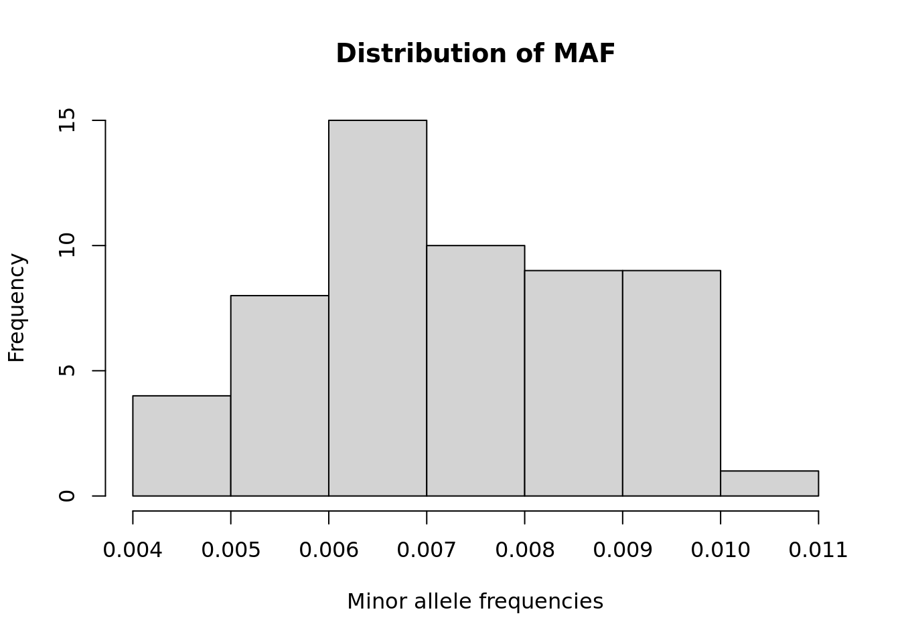
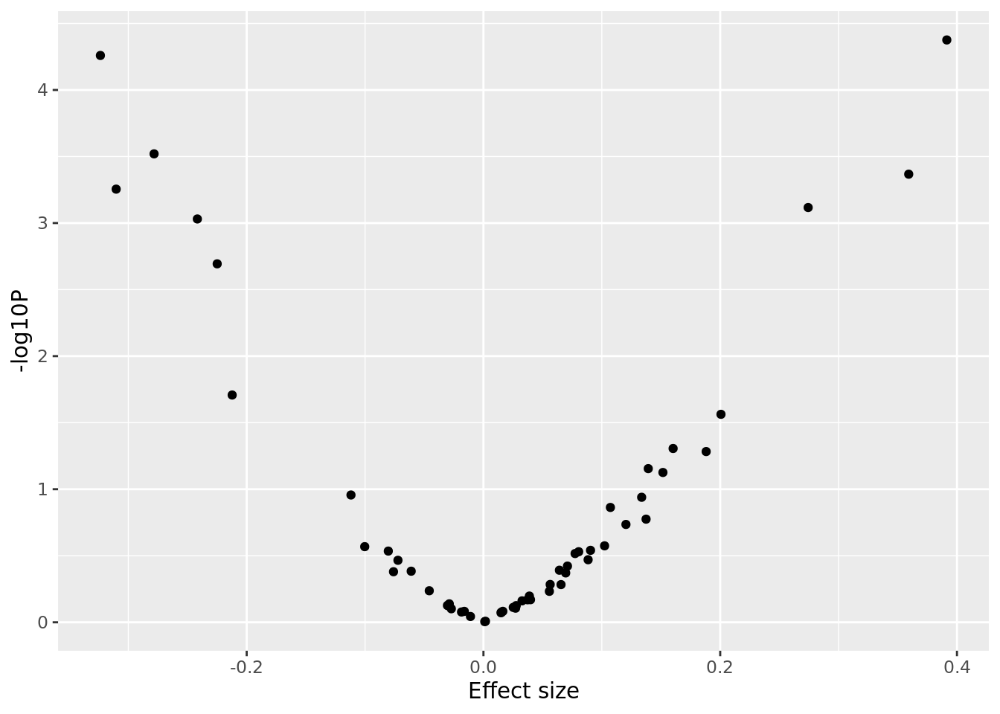

Last updated: 2022-07-26
Checks: 7 0
Knit directory: SISG2022_Association_Mapping/
This reproducible R Markdown analysis was created with workflowr (version 1.7.0). The Checks tab describes the reproducibility checks that were applied when the results were created. The Past versions tab lists the development history.
Great! Since the R Markdown file has been committed to the Git repository, you know the exact version of the code that produced these results.
Great job! The global environment was empty. Objects defined in the global environment can affect the analysis in your R Markdown file in unknown ways. For reproduciblity it’s best to always run the code in an empty environment.
The command set.seed(20220530) was run prior to running the code in the R Markdown file. Setting a seed ensures that any results that rely on randomness, e.g. subsampling or permutations, are reproducible.
Great job! Recording the operating system, R version, and package versions is critical for reproducibility.
Nice! There were no cached chunks for this analysis, so you can be confident that you successfully produced the results during this run.
Great job! Using relative paths to the files within your workflowr project makes it easier to run your code on other machines.
Great! You are using Git for version control. Tracking code development and connecting the code version to the results is critical for reproducibility.
The results in this page were generated with repository version c4a4032. See the Past versions tab to see a history of the changes made to the R Markdown and HTML files.
Note that you need to be careful to ensure that all relevant files for the analysis have been committed to Git prior to generating the results (you can use wflow_publish or wflow_git_commit). workflowr only checks the R Markdown file, but you know if there are other scripts or data files that it depends on. Below is the status of the Git repository when the results were generated:
Ignored files:
Ignored: analysis/.DS_Store
Ignored: analysis/.Rhistory
Ignored: code/.Rhistory
Ignored: data/.DS_Store
Ignored: lectures/.DS_Store
Untracked files:
Untracked: analysis/.Session07_practical_Key.Rmd.swp
Untracked: analysis/SISGM15_prac9Solution.Rmd
Untracked: analysis/Session08_practical_Key.Rmd
Note that any generated files, e.g. HTML, png, CSS, etc., are not included in this status report because it is ok for generated content to have uncommitted changes.
These are the previous versions of the repository in which changes were made to the R Markdown (analysis/Session07_practical_Key.Rmd) and HTML (docs/Session07_practical_Key.html) files. If you’ve configured a remote Git repository (see ?wflow_git_remote), click on the hyperlinks in the table below to view the files as they were in that past version.
| File | Version | Author | Date | Message |
|---|---|---|---|---|
| Rmd | c4a4032 | Joelle Mbatchou | 2022-07-26 | add key |
| html | ee9d8e9 | Joelle Mbatchou | 2022-07-26 | Build site. |
| Rmd | 5f9160c | Joelle Mbatchou | 2022-07-26 | add key |
| Rmd | 7d4cde5 | Joelle Mbatchou | 2022-07-25 | edit |
| html | 2715c97 | Joelle Mbatchou | 2022-07-25 | Build site. |
| Rmd | f3eaf62 | Joelle Mbatchou | 2022-07-25 | fix files |
Before you begin:
require(data.table)
require(dplyr)
require(tidyr)
require(BEDMatrix)
require(SKAT)
require(ACAT)
require(ggplot2)We will look into a dataset collected on a quantitative phenotype which was first analyzed through GWAS and a signal was detected in chromosome 1. Let’s determine whether the signal is present when we focus on rare variation at the locus. In our analyses, we will define rare variants as those with \(MAF \leq 5\%\).
The file “rv_pheno.txt”” contains the phenotype measurements for a set of individuals and the file “rv_geno_chr1.bed” is a binary file in PLINK BED format with accompanying BIM and FAM files which contains the genotype data.
Here are some things to try:
system("/data/SISG2022M15/exe/plink2 --bfile /data/SISG2022M15/data/rv_geno_chr1 --max-maf 0.05 --maj-ref force --make-bed --out chr1_region_rv")BEDMatrix()G <- BEDMatrix("chr1_region_rv", simple_names = TRUE)Extracting number of samples and rownames from chr1_region_rv.fam...Extracting number of variants and colnames from chr1_region_rv.bim...rv_pheno.txty <- fread("/data/SISG2022M15/data/rv_pheno.txt", header = TRUE)ids.keep <- y %>% drop_na(Pheno) %>% pull(IID)
length(ids.keep)[1] 9949G <- G[match(ids.keep, rownames(G)), ]
y <- y %>% drop_na(Pheno)
dim(G)[1] 9949 56maf <- apply(G, 2, function(x) mean(x, na.rm=TRUE))/2
maf %>% hist(xlab = "Minor allele frequencies", main = "Distribution of MAF")
| Version | Author | Date |
|---|---|---|
| 2715c97 | Joelle Mbatchou | 2022-07-25 |
sum(is.na(G))[1] 0system("/data/SISG2022M15/exe/plink2 --bfile chr1_region_rv --pheno /data/SISG2022M15/data/rv_pheno.txt --pheno-name Pheno --glm allow-no-covars --out sv_test")sv_pvals <- fread("sv_test.Pheno.glm.linear")
bonf.p <- 0.05 / length(sv_pvals$P)
bonf.p[1] 0.0008928571sv_pvals[P <= bonf.p, ] %>%
arrange(P) #CHROM POS ID REF ALT A1 TEST OBS_CT BETA SE
1: 1 12639385 1:12639385:G:A A G G ADD 9949 0.391421 0.0955243
2: 1 12057950 1:12057950:C:T T C C ADD 9949 -0.323574 0.0801934
3: 1 12734720 1:12734720:A:C C A A ADD 9949 -0.278236 0.0769709
4: 1 12405413 1:12405413:T:C C T T ADD 9949 0.359249 0.1019850
5: 1 12360016 1:12360016:G:A A G G ADD 9949 -0.310260 0.0898433
6: 1 12183493 1:12183493:G:A A G G ADD 9949 0.274311 0.0814842
T_STAT P ERRCODE
1: 4.09761 4.20759e-05 .
2: -4.03492 5.50288e-05 .
3: -3.61482 3.02042e-04 .
4: 3.52258 4.29282e-04 .
5: -3.45335 5.55975e-04 .
6: 3.36643 7.64368e-04 .sv_pvals %>%
ggplot(aes(x = sv_pvals$BETA, y = -log10(sv_pvals$P))) +
geom_point() +
labs(x = "Effect size", y = "-log10P")
| Version | Author | Date |
|---|---|---|
| 2715c97 | Joelle Mbatchou | 2022-07-25 |
weights <- dbeta(MAF, 1, 25))For each approach, first generate the burden scores vector then test it for association with the phenotype using lm() R function.
# CAST
# count number of rare alleles for each person and determine if it is > 0
burden.cast <- as.numeric( apply(G, 1, sum) > 0 )
lm(y$Pheno ~ burden.cast) %>% summary
Call:
lm(formula = y$Pheno ~ burden.cast)
Residuals:
Min 1Q Median 3Q Max
-3.9531 -0.6880 0.0012 0.6822 3.6581
Coefficients:
Estimate Std. Error t value Pr(>|t|)
(Intercept) 0.002423 0.015317 0.158 0.874
burden.cast 0.017757 0.020422 0.870 0.385
Residual standard error: 1.01 on 9947 degrees of freedom
Multiple R-squared: 7.6e-05, Adjusted R-squared: -2.452e-05
F-statistic: 0.7561 on 1 and 9947 DF, p-value: 0.3846# MZ
# count number of sites with rare alleles for each person
burden.mz <- apply( G > 0 , 1, sum)
lm(y$Pheno ~ burden.mz) %>% summary
Call:
lm(formula = y$Pheno ~ burden.mz)
Residuals:
Min 1Q Median 3Q Max
-3.9521 -0.6894 -0.0013 0.6805 3.6591
Coefficients:
Estimate Std. Error t value Pr(>|t|)
(Intercept) 0.001444 0.013700 0.105 0.916
burden.mz 0.013492 0.011346 1.189 0.234
Residual standard error: 1.01 on 9947 degrees of freedom
Multiple R-squared: 0.0001421, Adjusted R-squared: 4.162e-05
F-statistic: 1.414 on 1 and 9947 DF, p-value: 0.2344# Weighted burden
# weighted sum of genotype counts across sites
weights <- dbeta(maf, 1, 25)
burden.weighted <- G %*% weights
lm(y$Pheno ~ burden.weighted) %>% summary
Call:
lm(formula = y$Pheno ~ burden.weighted)
Residuals:
Min 1Q Median 3Q Max
-3.9519 -0.6896 -0.0014 0.6804 3.6593
Coefficients:
Estimate Std. Error t value Pr(>|t|)
(Intercept) 0.0012244 0.0136778 0.090 0.929
burden.weighted 0.0006577 0.0005402 1.217 0.223
Residual standard error: 1.01 on 9947 degrees of freedom
Multiple R-squared: 0.000149, Adjusted R-squared: 4.846e-05
F-statistic: 1.482 on 1 and 9947 DF, p-value: 0.2235# fit null model (no covariates)
skat.null <- SKAT_Null_Model(y$Pheno ~ 1 , out_type = "C")
# Run SKAT association test
SKAT(G, skat.null )$p.value[1] 8.745405e-11r.corr) to 0 and then 1.# Run SKATO association test specifying rho
p.skato.r0 <- SKAT(G, skat.null, r.corr = 0)$p.value
p.skato.r1 <- SKAT(G, skat.null, r.corr = 1)$p.value
c(rho0 = p.skato.r0, rho1 = p.skato.r1) rho0 rho1
8.745405e-11 2.234603e-01 # Run SKATO association test using grid of rho values
SKAT(G, skat.null, method="optimal.adj")$p.value[1] 6.121784e-10# `weights` vector is from Qesution 5
acat.weights <- weights^2 * maf * (1 - maf)
p.acatv <- ACAT(sv_pvals$P, weights = acat.weights)
p.acatv[1] 0.00112117ACAT( c(p.skato.r0, p.skato.r1, p.acatv) )[1] 2.623621e-10
sessionInfo()R version 4.2.1 (2022-06-23)
Platform: x86_64-pc-linux-gnu (64-bit)
Running under: Ubuntu 22.04 LTS
Matrix products: default
BLAS: /usr/lib/x86_64-linux-gnu/blas/libblas.so.3.10.0
LAPACK: /usr/lib/x86_64-linux-gnu/lapack/liblapack.so.3.10.0
locale:
[1] LC_CTYPE=C.UTF-8 LC_NUMERIC=C LC_TIME=C.UTF-8
[4] LC_COLLATE=C.UTF-8 LC_MONETARY=C.UTF-8 LC_MESSAGES=C.UTF-8
[7] LC_PAPER=C.UTF-8 LC_NAME=C LC_ADDRESS=C
[10] LC_TELEPHONE=C LC_MEASUREMENT=C.UTF-8 LC_IDENTIFICATION=C
attached base packages:
[1] stats graphics grDevices utils datasets methods base
other attached packages:
[1] ggplot2_3.3.6 ACAT_0.91 SKAT_2.2.4 RSpectra_0.16-1
[5] SPAtest_3.1.2 Matrix_1.4-1 BEDMatrix_2.0.3 tidyr_1.2.0
[9] dplyr_1.0.9 data.table_1.14.2 workflowr_1.7.0
loaded via a namespace (and not attached):
[1] tidyselect_1.1.2 xfun_0.31 bslib_0.3.1 purrr_0.3.4
[5] lattice_0.20-45 colorspace_2.0-3 vctrs_0.4.1 generics_0.1.3
[9] crochet_2.3.0 htmltools_0.5.2 yaml_2.3.5 utf8_1.2.2
[13] rlang_1.0.3 later_1.3.0 pillar_1.7.0 jquerylib_0.1.4
[17] withr_2.5.0 glue_1.6.2 DBI_1.1.3 lifecycle_1.0.1
[21] stringr_1.4.0 munsell_0.5.0 gtable_0.3.0 evaluate_0.15
[25] labeling_0.4.2 knitr_1.39 callr_3.7.0 fastmap_1.1.0
[29] httpuv_1.6.5 ps_1.7.1 fansi_1.0.3 highr_0.9
[33] Rcpp_1.0.9 scales_1.2.0 promises_1.2.0.1 jsonlite_1.8.0
[37] farver_2.1.1 fs_1.5.2 digest_0.6.29 stringi_1.7.6
[41] processx_3.7.0 getPass_0.2-2 rprojroot_2.0.3 grid_4.2.1
[45] cli_3.3.0 tools_4.2.1 magrittr_2.0.3 sass_0.4.1
[49] tibble_3.1.7 crayon_1.5.1 whisker_0.4 pkgconfig_2.0.3
[53] ellipsis_0.3.2 assertthat_0.2.1 rmarkdown_2.14 httr_1.4.3
[57] rstudioapi_0.13 R6_2.5.1 git2r_0.30.1 compiler_4.2.1